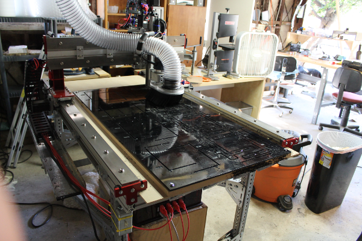
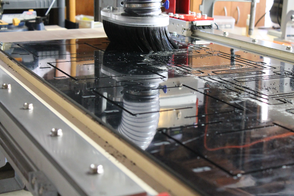

Machining the photogate on CNC Router¶
Photogates were machined on a CNC router from a sheet of 2’ x 4’ x 0.25” ABS. The drawings (DXF), gcode generation (py2gcode) and gcode for manufacturing the designs are available here: https://bitbucket.org/iorodeo/photogates. Below are some images of the manufacturing process.



